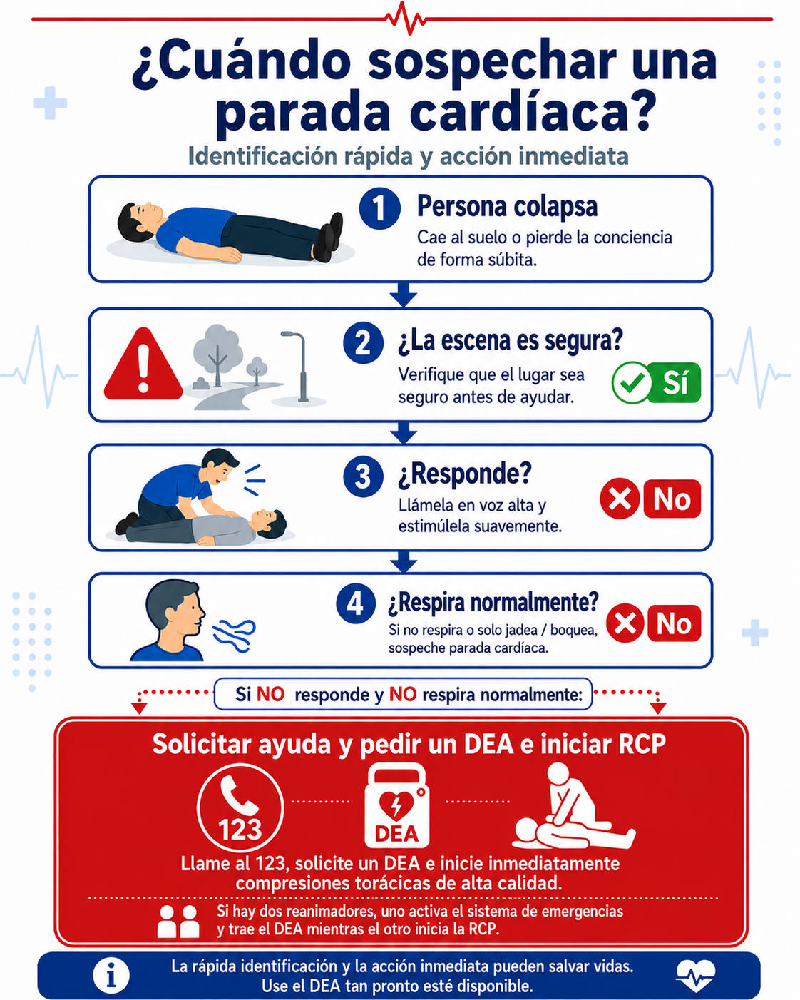

¿Cómo se identifica una posible parada cardíaca?
Una posible parada cardíaca se identifica principalmente por dos señales:
Para verificarlo, acércate únicamente si la escena es segura. Llama a la persona en voz alta y toca suavemente sus hombros. Puedes decir:
Si no responde, observa si el pecho o el abdomen se mueven de manera normal. Si no hay respiración, o si solo hay jadeos, boqueadas o respiración irregular, debes asumir que puede estar en parada cardíaca.
No es necesario buscar el pulso si no estás entrenado para hacerlo. La prioridad es reconocer rápidamente la situación e iniciar la respuesta.
¿Cuándo sospechar parada cardíaca?

Los jadeos o boqueadas no son respiración normal.
Ante la duda, si la persona no responde y no respira normalmente, inicia RCP.